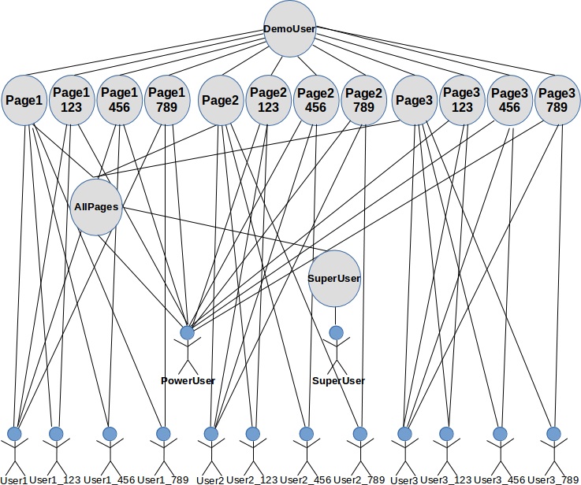
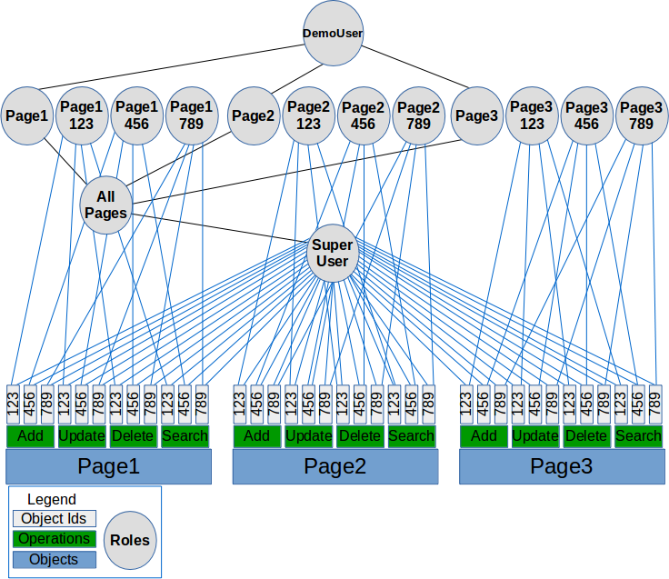
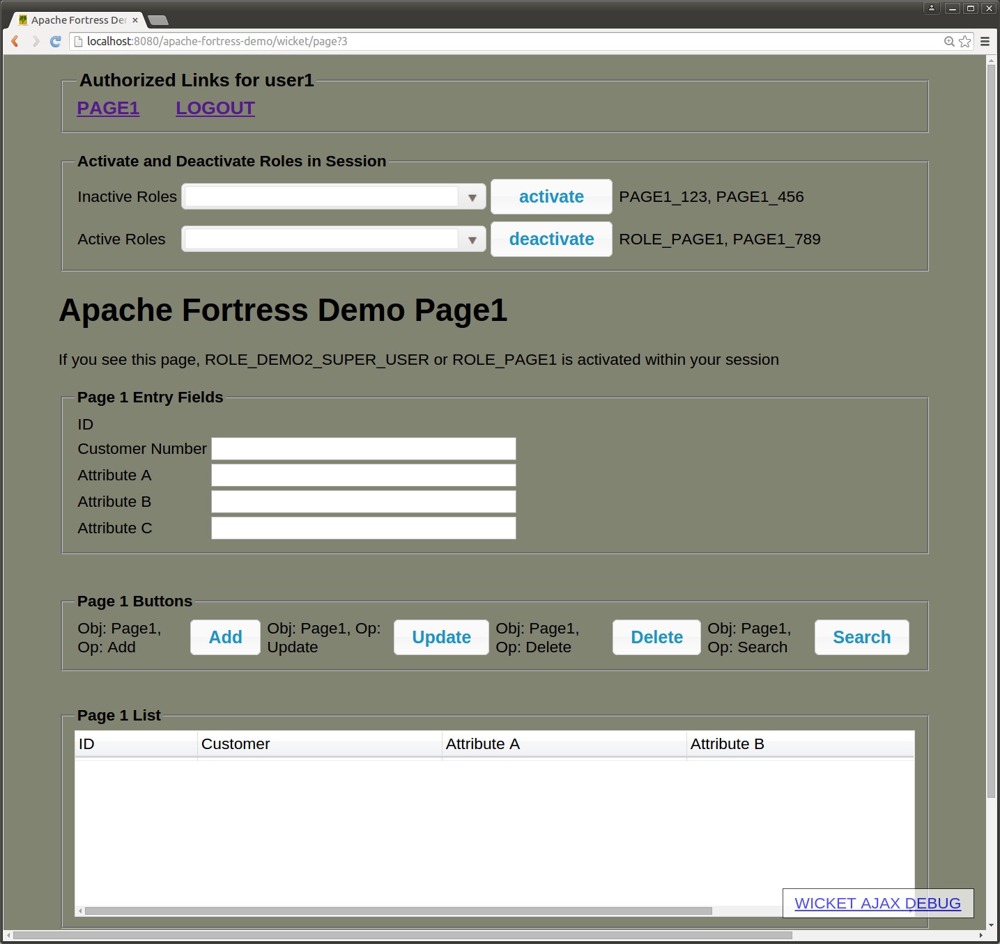

jar -xf apache-fortress-demo-master.zip
cd apache-fortress-demo-master/
cp ./src/main/resources/fortress.properties.example ./src/main/resources/fortress.properties
# LDAP host use value from [Set Hostname Entry]:
host=fortressdemo2.com
# LDAP port uses value from [Apache Fortress Core SSL]:
port=10636
# The ldap admin creds required for read/write access to DIT:
# LDAP user/pw use same value from [Apache Fortress Core SSL]:
admin.user=uid=admin,ou=system
admin.pw=secret
# Required for SSL Connections:
enable.ldap.ssl=true
# Useful when things go wrong:
enable.ldap.ssl.debug=false
# The truststore genned [Managing PKI Keys] or found under /src/test/resources in apache-fortress-demo source package.
trust.store=/home/smckinn/fortress/apache-fortress-demo-master/src/test/resources/mytruststore
trust.store.password=changeit
# The host value from [Set Hostname Entry] step:
database.url=jdbc:mysql://fortressdemo2.com:3306/demoDB?useSSL=true&requireSSL=true
# The JDBC creds required to match from [Install MySQL] step:
database.username=admin
database.password=secret
# This param informs fortress runtime the type of ldap server in use:
ldap.server.type=apacheds
# Setting this to 'true' broadcasts the jdbc params (as system.property) required by MySQL JDBC driver:
trust.store.set.prop=true
# Required:
database.driver=com.mysql.jdbc.Driver
# Required by the web app framework security components:
perms.cached=true
mvn tomcat:deploy -Dload.file
mvn tomcat:redeploy -Dload.file
mvn tomcat:redeploy
mvn test -Dtest=ApacheFortressDemoSeleniumITCase
Firefox must be installed to target machine before running this step.
Selenium verifies the test cases automatically. For each user, attempts are made to hit all pages and components. Positive and negative tests are performed. Failures in test cases will halt the execution of the program. The policy in effect is contained within apache-fortress-demo-load-policy.xml and loaded automatically during the web deployment step.
mvn test -Dtest=ApacheFortressDemoSeleniumITCase -Dweb.driver=chrome
Chrome must be installed to target machine before running this step.
-
non-SSL -
local: http://localhost:8080/apache-fortress-demo,
remote: http://fortressdemo2.com:8080/apache-fortress-demo
- SSL - local: https://localhost:8443/apache-fortress-demo, remote: https://fortressdemo2.com:8443/apache-fortress-demo
Accept the self-signed certificate when the warning dialog appears.
During manual testing, enter creds to login form, matching the entries found in the tables at the end of this document. Activate/deactivate different roles to gain access to different page and customer combinations. A dynamic separation of duty constraint prevents activation of more than one page-customer role at a time. It is best to run the automated selenium tests first, before attempting manual operation, in order to understand how to use this app.
This app's security policy maintains complex role-to-role (inheritance) and user-role assignments. Page roles, e.g. Page1, provide access to the page itself. Page-Customer roles, e.g. Page1_123, provide access to the components and data elements corresponding with that particular page for a given customer. All users (except SuperUser) are assigned combinations of page and page-customer roles. Only one page-customer role may be active in a user's session.
For a user to have access to a given page, customer combination, they must have been, at a minimum, assigned two roles, one for the page, e.g. page1, and one for page-customer, e.g. page1_789. The page roles are not bound by dynamic separation of duty (DSD) constraint. Hence we have users like poweruser, who may navigated across pages without changing roles. On the other hand the page-customer roles are bound by DSD constraint requiring a user to deactivate one page-customer role, e.g. page1_789, before activating another, e.g. page2_789.
user-role relations
The following diagram shows the role-role and user-role relations in place:
Demo policy role-role and user-role relationships
role-permission relations
The following diagram provides a view of the role-permission relationships in place:
Demo policy role-role and role-perm relationships
about superuser
The above diagrams shows that SuperUser has been granted access to all pages, all customers, via their assigned role, SuperUsers. Granting full access in this way is a common security antipattern because it violates the principle of least privilege. Only provide the access needed to perform assigned job tasks at a given point in time - and no more.
about poweruser
PowerUser also has access to all pages, all customers. But this user cannot simultaneously access more than one page-customer combination. This is accomplished by assigning all of the page-customer roles, i.e. Pag1_123, Page2_123, ... Page3_789, to the poweruser. But the roles have a mutual exclusion policy (dynamic separation of duty constraint) preventing activation of more than one at a time.
Here is the DSD policy in effect:
<addsdset>
<sdset
name="Demo2DSD"
setmembers="PAGE1_123,PAGE1_456,PAGE1_789,PAGE2_123,PAGE2_456,PAGE2_789,PAGE3_123,PAGE3_456,PAGE3_789"
cardinality="2"
setType="DYNAMIC"
description="ROLE_TEST DATA roles are mutually exclusive"
/>
</addsdset>
This is a safer approach to granting all access. The rationale: a user cannot simultaneously service two customers at the exact same time
so why allow it in the first place?
about the other users
Based on the name, one may infer what level of access they have. For example user1_123, may access page1's customer 123 functions. User2 has access to all customers on page2. User789 has access to all pages, for customer data 789.
Users may only have one page-customer role activated at a time. To change which role is activated, deactive the old one, and activate the new using the dropdown component at the top of the page.
The following diagram shows the role activation dropdown:

role activation dropdown
Always activate page-customer roles: page1_123, page1_456, page1_789, page2_123, page2_456, page2_789, page3_123, page3_456, page3_789.
Never activate or deactivate page roles: role_page1, role_page2, role_page3.
Once a page-customer role has been activated/deactivated, its corresponding buttons will appear/disappear from the page.
The following diagram shows User1's page after role activation of page1_789 role occurred. Notice that the buttons, Add, Update, Delete, Search, are visible.
user1, page1, role activation step
The following diagram shows User1's page after role deactivation of page1_789 occurred. Notice the buttons, Add, Update, Delete, Search, are no longer visible.

user1, page1, role deactivation step
-
userId: superuser, password: password
This user is assigned ROLE_DEMO2_SUPER_USER which grants all permissions and inherits page1, page2 and page3 roles. The page roles allow user to navigate to any page. The perm grants on this user allow all app functions and to view all customer data.
Customer 123 Customer 456 Customer 789 Page1 T T T Page2 T T T Page3 T T T -
userId: poweruser, password: password
The account has been assigned all of the page-customer roles and inherits page1, page2 and page3. User may navigate to any page and operate on any customer's data but must first activate the corresponding role and is subject to dynamic separation of duty constraints preventing activation of more than one page-customer role at a time.
Customer 123 Customer 456 Customer 789 Page1 T T T Page2 T T T Page3 T T T -
userId: user123, password: password
The account has PAGE1_123, PAGE2_123 and PAGE3_123 roles assigned. User may perform all functions on Pages 1, 2 & 3 for Customer 123 only, must first activate corresponding role, and is subject to dynamic separation of duty constraints.
Customer 123 Customer 456 Customer 789 Page1 T F F Page2 T F F Page3 T F F -
userId: user456, password: password
The account has PAGE1_456, PAGE2_456 and PAGE3_456 roles assigned. User may perform all functions on Pages 1, 2 & 3 for Customer 456 only, must first activate corresponding role, and is subject to dynamic separation of duty constraints.
Customer 123 Customer 456 Customer 789 Page1 F T F Page2 F T F Page3 F T F -
userId: user789, password: password
The account has PAGE1_789, PAGE2_789 and PAGE3_789 roles assigned. User may perform all functions on Pages 1, 2 & 3 for Customer 789 only, must first activate corresponding role, and is subject to dynamic separation of duty constraints.
Customer 123 Customer 456 Customer 789 Page1 F F T Page2 F F T Page3 F F T -
userId: user1, password: password
The account has PAGE1_123, PAGE1_456, and PAGE1_789 roles assigned. User may perform all functions on Page1 and view data for all customers but must first activate corresponding role and is subject to dynamic separation of duty constraints.
Customer 123 Customer 456 Customer 789 Page1 T T T Page2 F F F Page3 F F F -
userId: user1_123, password: password
The account has PAGE1_123 role assigned. User may perform all functions on Page1 only for Customer 123, must first activate corresponding role, and is subject to dynamic separation of duty constraints.
Customer 123 Customer 456 Customer 789 Page1 T F F Page2 F F F Page3 F F F -
userId: user1_456, password: password
The account has PAGE1_456 role assigned. User may perform all functions on Page1 only for Customer 456, must first activate corresponding role, and is subject to dynamic separation of duty constraints.
Customer 123 Customer 456 Customer 789 Page1 F T F Page2 F F F Page3 F F F -
userId: user1_789, password: password
The account has PAGE1_789 role assigned. User may perform all functions on Page1 only for Customer 789, must first activate corresponding role, and is subject to dynamic separation of duty constraints.
Customer 123 Customer 456 Customer 789 Page1 F F T Page2 F F F Page3 F F F -
userId: user2, password: password
The account has PAGE2_123, PAGE2_456, and PAGE2_789 roles assigned. User may perform all functions on Page2 and view data for all customers but must first activate corresponding role and is subject to dynamic separation of duty constraints.
Customer 123 Customer 456 Customer 789 Page1 F F F Page2 T T T Page3 F F F -
userId: user2_123, password: password
The account has PAGE2_123 role assigned. User may perform all functions on Page2 only for Customer 123, must first activate corresponding role, and is subject to dynamic separation of duty constraints.
Customer 123 Customer 456 Customer 789 Page1 F F F Page2 T F F Page3 F F F -
userId: user2_456, password: password
The account has PAGE2_456 role assigned. User may perform all functions on Page2 only for Customer 456, must first activate corresponding role, and is subject to dynamic separation of duty constraints.
Customer 123 Customer 456 Customer 789 Page1 F F F Page2 F T F Page3 F F F -
userId: user2_789, password: password
The account has PAGE2_789 role assigned. User may perform all functions on Page2 only for Customer 789, must first activate corresponding role, and is subject to dynamic separation of duty constraints.
Customer 123 Customer 456 Customer 789 Page1 F F F Page2 F F T Page3 F F F -
userId: user3, password: password
The account has PAGE3_123, PAGE3_456, and PAGE3_789 roles assigned. User may perform all functions on Page3 and view data for all customers but must first activate corresponding role and is subject to dynamic separation of duty constraints.
Customer 123 Customer 456 Customer 789 Page1 F F F Page2 F F F Page3 T T T -
userId: user3_123, password: password
The account has PAGE3_123 role assigned. User may perform all functions on Page3 only for Customer 123, must first activate corresponding role, and is subject to dynamic separation of duty constraints.
Customer 123 Customer 456 Customer 789 Page1 F F F Page2 F F F Page3 T F F -
userId: user3_456, password: password
The account has PAGE3_456 role assigned. User may perform all functions on Page3 only for Customer 456, must first activate corresponding role, and is subject to dynamic separation of duty constraints.
Customer 123 Customer 456 Customer 789 Page1 F F F Page2 F F F Page3 F T F -
userId: user3_789, password: password
The account has PAGE3_789 role assigned. User may perform all functions on Page3 only for Customer 789, must first activate corresponding role, and is subject to dynamic separation of duty constraints.
Customer 123 Customer 456 Customer 789 Page1 F F F Page2 F F F Page3 F F T